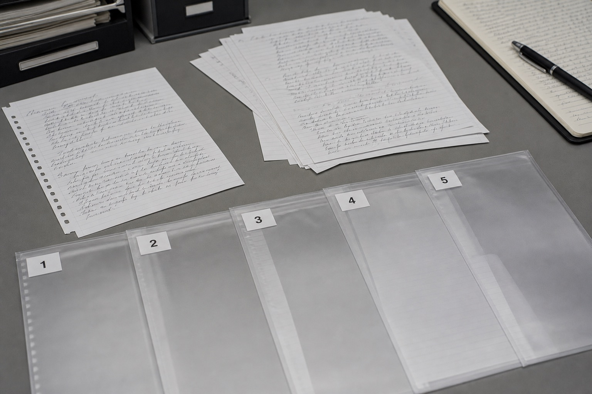

进行笔迹分析需要准备哪些样本？
样本不是越多越好。十几张来源不明的截图，往往不如三四份时间清楚、书写自然的完整文件有用。

自然形成的样本
日常书写材料通常更能反映稳定习惯，应尽量保留完整页面。
时间和数量
准备多份形成时间接近的样本，并补充其他时期材料用于观察变化。
原件与图片
原件保留的信息更多；使用扫描件或照片时，应保证分辨率和拍摄角度。
待分析材料和对比样本要分开
先建立两个文件夹，分别放需要判断的材料和来源明确的自然样本。文件名写清年份、类型和页码，后续核对会省很多时间。
优先选择时间接近的自然样本
书写习惯会随年龄、状态和工具发生变化。主要对比样本应尽量接近待分析材料的形成时期，再用其他年份材料补充长期变化。
原件、扫描件和照片应明确标注
不同载体保留的细节不同。文件名中直接写明材料形式，不要把复印件误当原件，也不要覆盖未经处理的原图。
同期自然样本应优先整理
与待分析文件形成时间接近的自然材料，通常更能反映当时的书写状态。可以先按年份和月份建立清单，再从会议记录、便笺、签批和连续正文中选择内容清楚的样本。
原件优先保留，扫描件和照片要注明来源。模仿笔迹、模仿签名、模仿签字材料与笔迹鉴定对比样本应分开命名，避免用途混淆。
常见问题
复印件能作为样本吗？
可以提供部分形态信息，但细节可能受到复印质量影响，建议同时补充高清扫描件或原件。